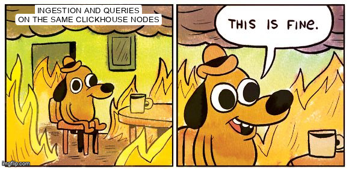
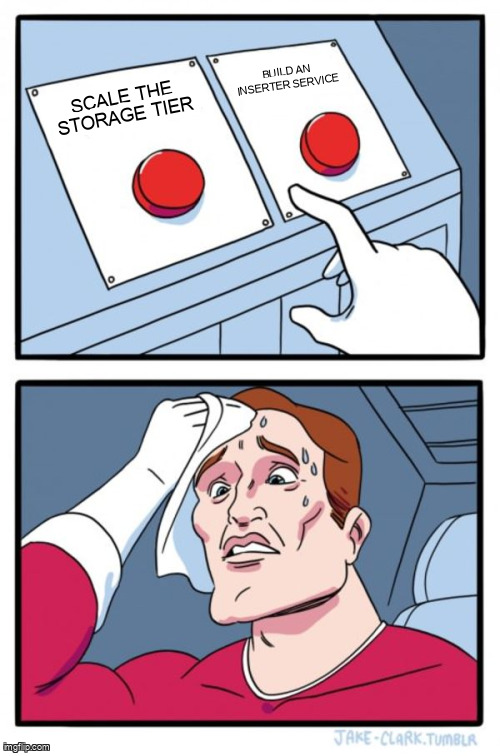
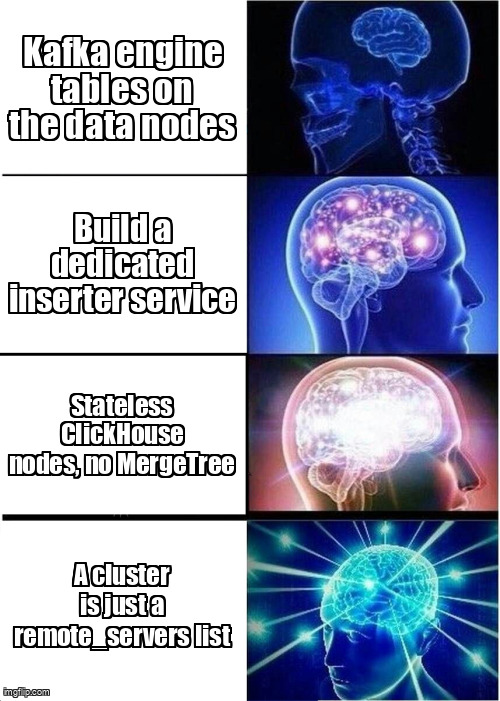
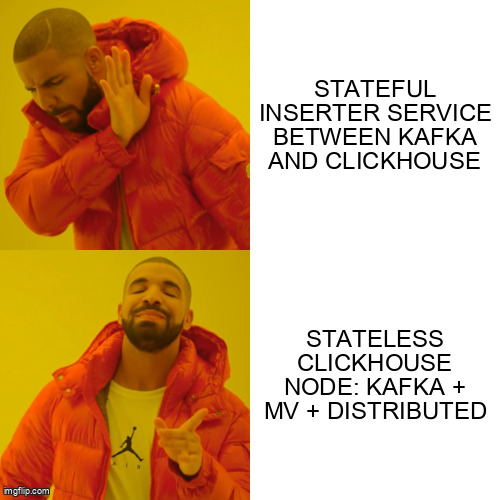
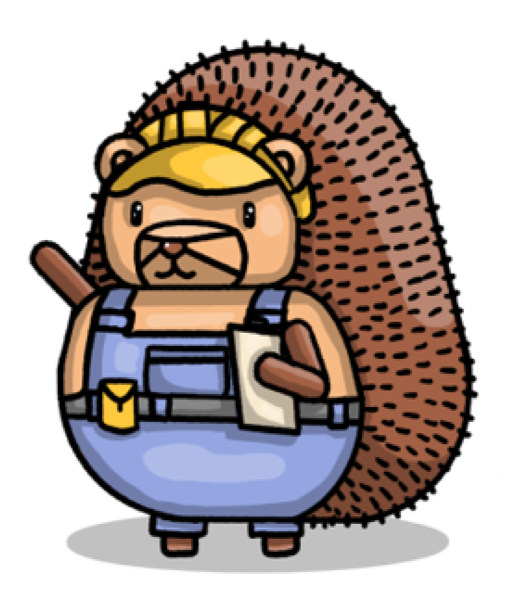
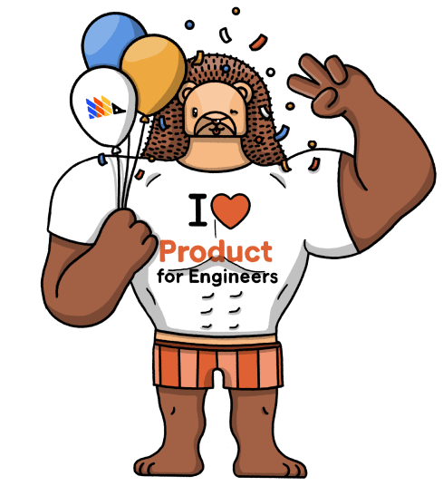

How we turned ClickHouse itself into our Kafka → CH inserter — and deleted the service we were about to build.
James Greenhill · no MergeTree required
James Greenhill — Member of Token Burning Staff, PostHog.
PostHog = open-source product analytics, session replay, feature flags, data warehouse. All the analytical data lives in ClickHouse.
Kafka table engines, living on the data nodes.
Kafka table engine is a consumer. A materialized view fires on each inserted block and writes into the real MergeTree table. Elegant — pull-based, resilient to spikes, no external writer.
The insert is the cheap part. Most of the CPU goes to denormalizing properties off every event — parsing the JSON and writing it into Map columns and dozens of materialized columns. On shared nodes, that work fights your queries for the same cores.

Our data nodes, every time a dashboard fired a heavy query while the Kafka consumers were trying to keep up.

The hard part was never the consumer loop — it was the schema. An inserter has to denormalize events into our ever-changing dynamic event schema, which we'd then maintain in two surface areas: once in Go, once in ClickHouse SQL. Wrangling prop Maps and materialized columns in one place was already painful.
And the types would drift subtly between Go and ClickHouse — versus ClickHouse feeding native ClickHouse, one type system end to end.
How far Plan A got, in full (~/inserter):
module github.com/posthog/inserter
go 1.20
// ...line 3 was never written. (Apr 2023)
The evolution of our ingestion takes — ending on the enlightenment.
We didn't need a new service. We needed a new role for ClickHouse.
In ClickHouse, a cluster is a <remote_servers> entry — nothing more. The nodes in it can live anywhere, run anything, and be added at will.
<remote_servers>
<posthog> <!-- the sharded storage cluster -->
<shard><replica><host>data-1</host></replica> ... </shard>
... 10 shards × 3 replicas (EC2, NVMe) ...
</posthog>
<posthog_single_shard> <!-- one shard, for non-sharded writes -->
<shard><replica><host>data-1</host></replica></shard>
</posthog_single_shard>
</remote_servers>So we can define a cluster that mixes EC2 storage workers with brand-new stateless K8s pods. Same logical cluster, totally different hardware.
Consume from Kafka? Kafka table engine.
Transform + batch? Materialized view.
Route to the right shard and INSERT? Distributed engine.
Every feature we'd have built into the inserter, ClickHouse already ships. So run those three objects on a node that stores nothing.

Build-vs-reuse, in one frame.
ClickHouse is already a perfectly good stream processor. Give it a node with no disk to worry about.
Four objects. Two node roles. One native-protocol hop.

DATA nodes
INGESTION nodes (stateless)
The MV reads from the Kafka table and writes to the writable Distributed table. The Distributed table forwards to the MergeTree on the data nodes. Done.
CREATE TABLE IF NOT EXISTS groups
(
group_type_index UInt8,
group_key VARCHAR,
created_at DateTime64,
team_id Int64,
group_properties VARCHAR,
_timestamp DateTime,
_offset UInt64
)
ENGINE = ReplicatedReplacingMergeTree(
'/clickhouse/tables/{shard}/posthog.groups', '{replica}', _timestamp)
ORDER BY (team_id, group_type_index, group_key)Plain replicated MergeTree. It has no idea Kafka exists. This is the only stateful piece.
CREATE TABLE IF NOT EXISTS writable_groups
(
group_type_index UInt8, group_key VARCHAR, created_at DateTime64,
team_id Int64, group_properties VARCHAR, _timestamp DateTime, _offset UInt64
)
ENGINE = Distributed('posthog_single_shard', 'default', 'groups');Non-sharded target → point the Distributed table at posthog_single_shard. Sharded target → use the full posthog cluster with a sharding key:
ENGINE = Distributed('posthog', 'default', 'sharded_events', sipHash64(distinct_id));CREATE TABLE IF NOT EXISTS kafka_groups
(
group_type_index UInt8, group_key VARCHAR, created_at DateTime64,
team_id Int64, group_properties VARCHAR
)
ENGINE = Kafka(warpstream_ingestion, -- named collection (broker list)
kafka_topic_list = 'groups',
kafka_group_name = 'group1',
kafka_format = 'JSONEachRow');Broker lists come from named collections — which is how we run MSK and WarpStream side by side (more later). One consumer per INGESTION_SMALL node; more on the hotter tiers.
CREATE MATERIALIZED VIEW IF NOT EXISTS groups_mv
TO writable_groups -- ← writes into the Distributed table
AS SELECT
group_type_index, group_key, created_at, team_id, group_properties,
_timestamp, _offset
FROM kafka_groups; -- ← reads from the Kafka table engineSelecting from the Kafka table advances consumer offsets. The MV fires per block, transforms, and pushes into writable_groups → which forwards to the data nodes. That's the whole inserter.
stateless ingestion pod (K8s)
Native-protocol INSERT over the cluster. The pod holds no data — kill it, replace it, scale it, nothing is lost.
operations = [
run_sql_with_exceptions(GROUPS_TABLE_SQL(), node_roles=[NodeRole.DATA]),
run_sql_with_exceptions(GROUPS_WRITABLE_TABLE_SQL(), node_roles=[NodeRole.INGESTION_SMALL]),
run_sql_with_exceptions(KAFKA_GROUPS_TABLE_SQL(), node_roles=[NodeRole.INGESTION_SMALL]),
run_sql_with_exceptions(GROUPS_TABLE_MV_SQL(), node_roles=[NodeRole.INGESTION_SMALL]),
]No ON CLUSTER. run_sql_with_exceptions fans each statement to exactly the hosts whose macro hostClusterRole matches — so the MergeTree lands on storage, and Kafka/MV/Distributed land on the stateless tier.
class NodeRole(StrEnum):
DATA = "data" # the sharded MergeTree storage cluster
INGESTION_SMALL = "small" # 1 Kafka consumer — low-volume topics
INGESTION_MEDIUM = "medium" # 4 Kafka consumers — mid-volume
INGESTION_EVENTS = "events" # the main event firehose, many shards
SHUFFLEHOG = "shufflehog" # re-partitions events so each key has one consumer
# separate clusters: AI_EVENTS, AUX, OPS, SESSIONS, LOGS, ENDPOINTS ...Each role is its own logical cluster of stateless nodes, sized to the topic it drains. Scaling ingestion now means adding cheap, stateless pods — never touching the storage tier.
Two regions, ~60 stateless ingestion nodes, zero stored bytes.

Storage (stateful, EC2 + NVMe)
Ingestion (stateless, K8s + EC2)
Ingestion outnumbers storage by node count — but costs a fraction, because there's no data to hold or protect.
EC2 ingestion hosts (Ansible inventory):
hostClusterRole: ingestion
raid_volumes: [] # no NVMe / EBS data disks
backup_tables: [] # nothing to back up
clickhouse_disk_balancer_enabled: falseK8s ingestion pods (chart values):
volumeTemplates:
- name: ingestion
reclaimPolicy: Delete # PVC dies with the pod
resources:
requests: { storage: 10Gi } # local cache onlyClickHouseInstallation CRD (the chi-ingestion-* pods in kubectl get pods). Thanks for the operator, Altinity 👋
Pods get recycled and lose their disk — and it doesn't matter. The data is in Kafka and on the storage cluster; the ingestion tier is pure compute.
Every stateless node is the same core — a Kafka table engine → materialized view, no MergeTree. The only thing that changes is what the MV writes into.
Sink = ClickHouse.
The inserter service we never built.
Sink = Kafka, re-keyed.
Re-shapes the stream for a downstream service.
Downstream is propdefs (property-defs-rs): it tracks every project + event + property key seen, buffers them, and flushes idempotent upserts into Postgres.
(project, event) arrived on many partitions → many consumers upserting the same Postgres rows → tuple-lock contention → everything crawled.(project + event) hashes to one partition. Exactly one consumer owns each key, so the squash upserts with zero row contention in PG.Migrating MSK → WarpStream with zero downtime: run two Kafka table engines on the same topic — one per backend — both feeding the same writable table, with separate consumer groups.
Cut over by adding/removing MV legs. No inserter to rewrite, no dual-write code — just DDL.
The cost of this pattern is schema management. Every object — the data table, the Kafka table engine, the MV, the Distributed writable table — is schema we own and migrate, now across multiple node roles.
It's real engineering — but far simpler than building, scaling, and being on call for a stateful inserter service.
And we didn't start from zero: our ClickHouse topology — shards × replicas across several clusters — already forced us to build a migration system. The stateless ingestion tiers just added a few layers to it: small, medium, events.
Ingestion scales independently from the data & query tiers. We add stateless ingestion pods without touching storage — and because the query tier's resources are now dedicated, query performance is far more deterministic.
Kafka engine + materialized view + Distributed table, on a node that stores nothing, is a stream processor.
The pattern, the migrations, and the topology are all open source.
posthog/clickhouse/migrations/We're hiring → posthog.com/careers